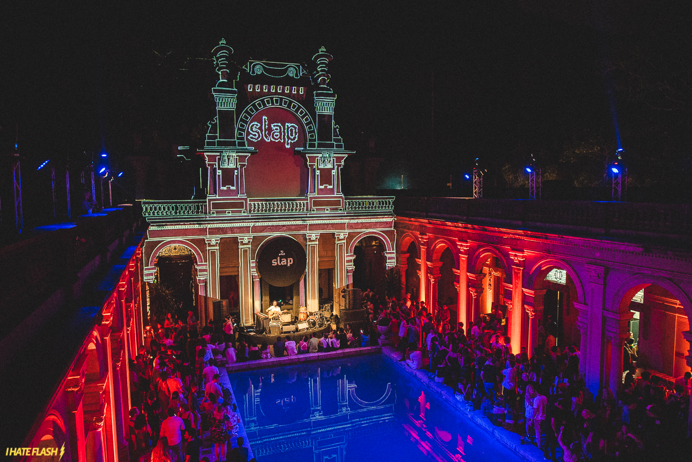
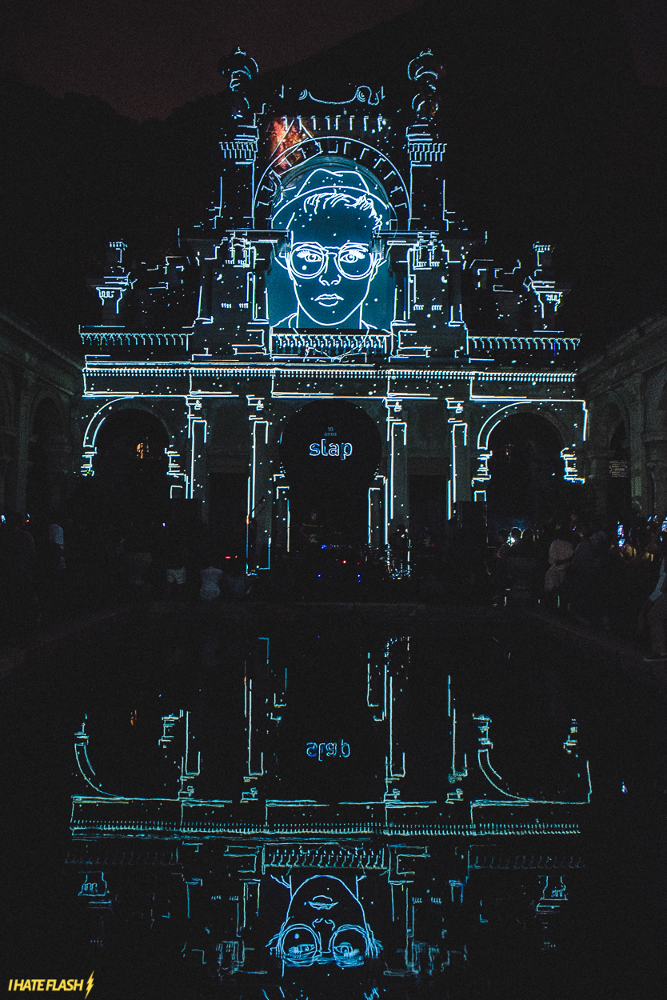
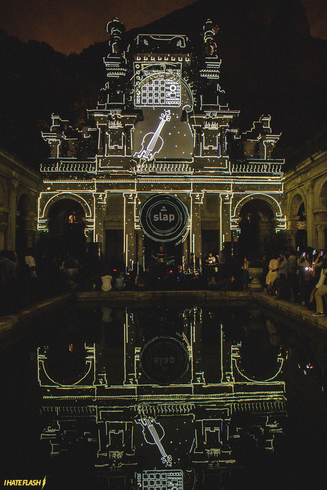

A Slap é um selo/gravadora da Som Livre, que em 2017 completou 10 anos. Para comemorar, eles fizeram uma grande festa no Parque Lage, no Rio de Janeiro, e nos chamaram para produzir uma projeção mapeada contando essa trajetória.



Freelance
2017
Design e Animação Adolfo Fischer e Vinícius Franco
Montagem e Projeção Ian Teixeira e Rodrigo Pimenta
Registros I Hate Flash!